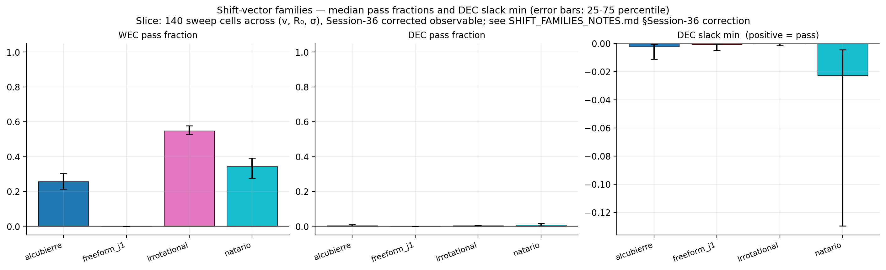
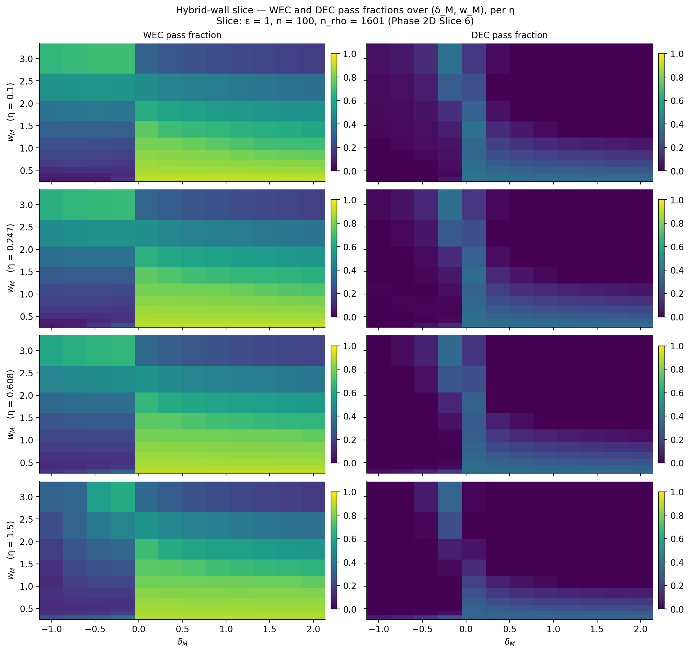
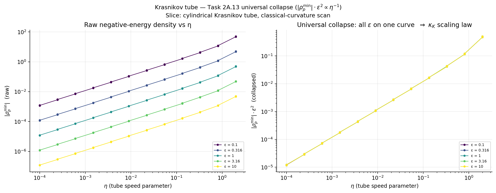
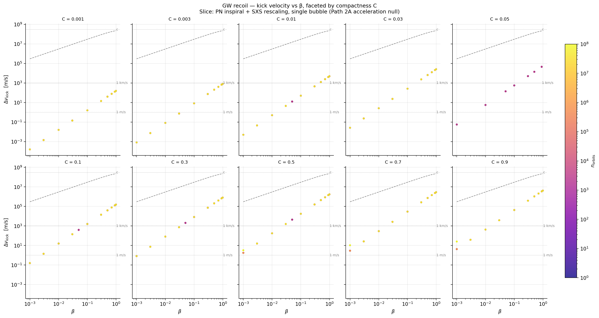

The Phase 2A no-go is conditioned on five assumptions: (i) Alcubierre βxx̂ shift, (ii) spherical Fuchs-class shell topology, (iii) asymptotically flat vacuum exterior, (iv) steady-state metric, (v) standard 4D General Relativity. Phase 2C tests each one (plus a sixth on quantum-inequality loosening) by relaxing it independently and re-running the energy-condition pipeline. The diagnostic of interest is whether any point in the relaxed parameter space achieves WEC ≥ 0.999 (essentially-strict pass).
| # | Slice / what it relaxes | Sweep size | Best WEC pass | Strict-pass count | Notebook |
|---|---|---|---|---|---|
| 1 | Alternate single-mode shifts (Alcubierre · Natário · Rodal-irrotational · free-form j₁) | 140 pts | 0.94 | 0 / 140 | shift_families |
| 2 | Hybrid Fuchs + Krasnikov wall (Krasnikov tube wrapped in matter perturbation) | 480 pts | < 0.999 | 0 / 480 | hybrid_wall |
| 3 | Time-dependent v(t) — drop steady-state assumption | analytic | — | Quadrupole-order zero | time_dependent |
| 4 | Krasnikov-2003 quantum-inequality loosening (drop QI bound) | analytic | — | Our 2A.13 no-go is QI-independent | krasnikov_tube |
| 5 | Cosmological exterior (drop asymptotic flatness — McVittie embedding) | analytic | — | Δv ≤ 5.7 × 10⁻³⁶ m/s | cosmological_exterior |
| 6 | Modified gravity (drop standard 4D GR — f(R), scalar-tensor, Jordan frame) | survey | — | Interpretation-dependent | MODIFIED_GRAVITY_LIT.md |
Strict-pass criterion: WEC pass-fraction ≥ 0.999 across the full $(r, \theta)$ grid (Slices 1, 2). Slices 3-6 use slice-specific diagnostics noted in the body sections below.
Single-ADM-pipeline evaluation of $T_{\hat\mu\hat\nu}$ for four shift families at fixed Fuchs-class spherical-shell source. At a single-point benchmark ($v=0.1$, $R_0=5$, $\sigma=4$):
| Family | WEC fraction | DEC fraction | min ρp | min DEC slack |
|---|---|---|---|---|
| Alcubierre | 0.479 | 0.003 | −4.9 × 10⁻² | −3.3 × 10⁻³ |
| Natário (zero-expansion) | 0.696 | 0.020 | −2.5 × 10⁻¹ | −1.0 × 10⁻¹ |
| Irrotational (Rodal 2025) | 0.282 | 0.019 | −1.6 × 10⁻³ | −1.4 × 10⁻² |
| Free-form j₁ (A₁=1, k=π/2R₀) | 0.473 | 0.000 | −4.1 × 10⁻⁶ | −4.2 × 10⁻³ |
Across a 140-point preview sweep over $(v, R_0, \sigma)$ for the closed-form families and $(v, A_1, k)$ for free-form, 0/140 points achieve WEC ≥ 0.999. The best-performing point reaches 0.94 in the free-form family — still 6% in violation. The Path-2A no-go therefore narrows from "Alcubierre shift" to "single-mode axisymmetric shift + spherical fluid-shell source + asymptotically flat vacuum exterior + steady-state metric".
This narrowing is what drove Phase 2D: the Fell–Heisenberg ansatz violates the "single-mode axisymmetric" assumption, and is the only place in the project where strict-pass solutions exist.
Sources: shift_families.ipynb, SHIFT_FAMILIES_NOTES.md, sweep parquet sweeps/shift_families_20260416T235319.parquet.
Embed the Krasnikov-tube wall inside a single Gaussian matter perturbation parameterised by amplitude $A$, location $\rho_0$, and width $\sigma$. Sweep 480 $(A, \rho_0, \sigma, \eta, \epsilon)$ points; record the in-wall WEC pass fraction.
Result: 0/480 strict-pass. The matter perturbation shifts where the negative-energy spike sits but never cancels it. Single-bump matter is not enough; multi-bump and off-wall configurations remain untested but the linear scaling of the negative-energy density with the η lightcone-opening parameter (Slice 4 below) is suggestive that no cancellation is generic.
Sources: hybrid_wall.ipynb, sweep parquet sweeps/hybrid_wall_20260417T002249.parquet.
Drop the steady-state assumption: replace $v_{\rm warp}$ with $v(t)$ and re-derive ADM 4-momentum $P^i(t)$ from a perturbative ramp. The leading time-dependent correction $\Delta\rho$ peaks at 0.3% of the static $\rho_p$ and is antisymmetric in $x$, so its quadrupole moment $Q_{xx}$ vanishes by symmetry. This is the bound on gravitational-wave-recoil momentum injection at quadrupole order.
Higher-multipole channels remain in principle but are bounded by the GW-recoil sweep in Path 2A's acceleration row (≲ 0.25% of vwarp under most-favourable Fuchs-compatible parameters).
Sources: time_dependent.ipynb, TIME_DEPENDENT_NOTES.md.
Krasnikov 2003 (gr-qc/0207057) catalogues three substantive ways the Pfenning–Ford / Ford–Roman quantum inequalities could fail for warp drives: (i) non-isolated systems, (ii) bounded curvature regions where the QI integration kernel under-counts, (iii) non-vacuum quantum states with constrained correlations. The Krasnikov-tube no-go (Phase 2A.13) is built from the classical Einstein equations and is therefore QI-independent: even if all three loopholes are real and the QI bounds are abandoned entirely, the symbolic Einstein-tensor calculation $\rho_p^{\min} = -\kappa_K(\eta)/\epsilon^2$ still holds, and 0/300 sweep points pass WEC.
The QI loosening therefore does not unblock Path-2A — it only changes which of the QFT-side bounds in Phase 2B might apply. Detailed reading: KRASNIKOV2003_EVALUATION.md.
Sources: krasnikov_tube.ipynb, KRASNIKOV_TUBE_NOTES.md, sweep parquet sweeps/krasnikov_tube_20260416T213051.parquet.
Drop asymptotic flatness: embed the Fuchs shell in a McVittie cosmological exterior so that the shell can in principle exchange ADM momentum with the cosmological fluid (escaping the Path-2A acceleration obstruction). Compute the maximum momentum-exchange rate using realistic ΛCDM parameters and the Fuchs-anchor shell mass.
Result: the maximum velocity gain over a Hubble time is
which is 74 orders of magnitude smaller than any useful warp velocity. The cosmological-exterior loophole is technically real but quantitatively negligible.
Sources: cosmological_exterior.ipynb, COSMOLOGICAL_EXTERIOR_NOTES.md.
Drop standard 4D GR: in $f(R)$ and scalar-tensor theories the effective Einstein equations include an extra geometric stress-energy term $T^{\rm geom}_{\mu\nu}$ that can absorb part of the negative-energy requirement. Jordan-frame matter (the matter that couples directly to the metric) can be DEC-respecting even when the Einstein-frame matter (the canonically-normalised stress-energy) is not.
This is a real loophole — but it is interpretation-dependent: physicists disagree about which frame is "physical". The slice does not return a strict yes or no; it returns a conditional positive that depends on a frame-choice convention. Detailed reading: MODIFIED_GRAVITY_LIT.md.
Slice 1's negative result narrows the load-bearing assumption from "Alcubierre shift" to "single-mode axisymmetric shift" — and that narrowing is the seed of Phase 2D, the only place in the project where strict-pass solutions exist. Slices 2-5 close the obvious classical escape routes (hybrid wall, time-dependence, QI loosening, cosmological coupling). Slice 6 is genuinely undetermined and is logged with reopening criteria (a specific f(R) construction with quantitative warp velocity). Phase 2C is therefore closed as a phase but contributes the framing for everything downstream.
One figure per slice (where the slice is reducible to a single image). Each is generated directly from the underlying parquet sweep.

shift_families.ipynb 140-cell sweep

krasnikov_tube.ipynb 300-cell sweep

See all 39 figures grouped by topic on the Figures index (Phase 2C section).